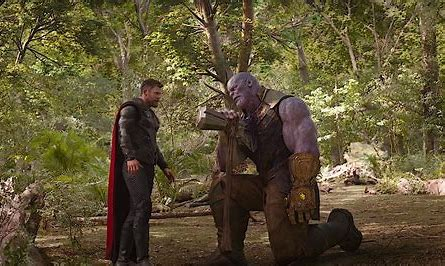

"Did you do it?"
"Yes."
"What did it cost?"
"...Everything."
―Gamora and Thanos
With all six of the Infinity Stones, Thanos placed the Mind Stone in the Infinity Gauntlet. As the might of all six stones were combined with the Gauntlet, Thanos harnessed infinite power and control over the universe. As this energy entered his body, Thanos roared out to the sky in pain.
Moments after the Gauntlet's completion, Thor furiously charged out from the sky and struck Thanos with a large lightning bolt that had been fired from Stormbreaker. In response to the attack, Thanos had furiously fired an energy beam with the combined strength of all six stones. However, Thor then launched Stormbreaker with all his might, which directly cut through the beam and straight towards Thanos himself, who could do nothing to stop it coming at him.
The axe ultimately struck Thanos in the chest, gravely wounding him as Thanos dropped down to his knees in agony while Thor had stepped over to him, basking in his victory over his enemy. Thor then took hold of Thanos' head, and reminded him of his promise that he would kill Thanos for murdering Heimdall and Loki, and thousands of Asgardians on the Statesman, furiously forcing the axe blade deeper into Thanos' chest which caused him to roar in pain.
After a brief moment of discomfort from the terrible wound caused by the axe still embedded deep inside his chest, Thanos, while struggling to get all his words out, taunted Thor that he should have aimed the axe for his head. Before his stunned opponent could react, Thanos simply lifted the Infinity Gauntlet into the air and snapped his fingers. The energy surged from the Gauntlet, which then caused the blinding light flooding the battlefield as Thanos briefly passed out.
To his surprise, Thanos then awoke within the Soulworld, without the wound in his chest or the Infinity Gauntlet. The void was empty, save for Thanos himself, and one building far in the distance. The building resembled the same archway on Zen-Whoberi where Thanos found the young Gamora waiting for him. Thanos grievously told her that he had finally completed his mission. As Gamora had asked what it cost him, Thanos became solemn and simply replied, "Everything."
Regaining normal consciousness, Thanos returned into his body back in Wakanda. Upon seeing all the damage inflicted on the scorched Infinity Gauntlet as a result of finally being able to activate the Snap, Thor furiously questioned Thanos about the finger-snap, demanding to know what he did, but he offered no answers and instead used the opening to heal his injury, give his enemy a spiteful glare, and teleport away using the Space Stone.